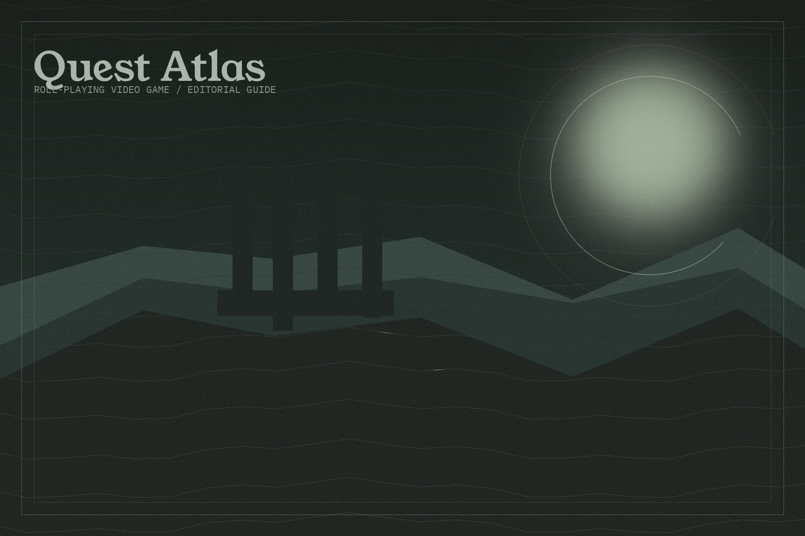
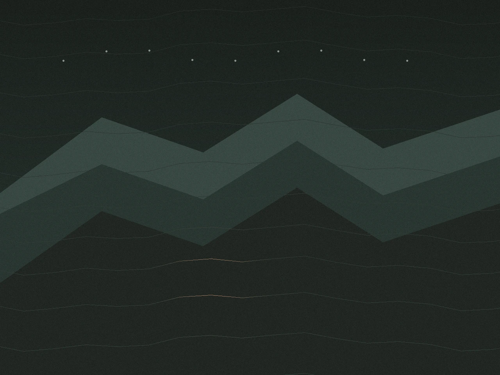
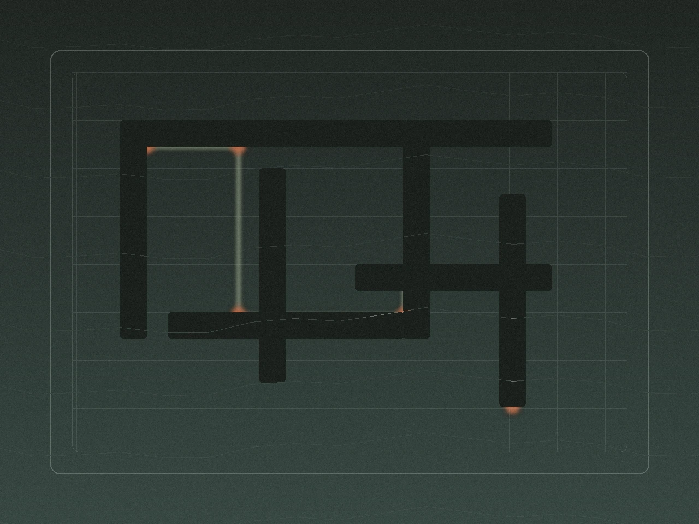
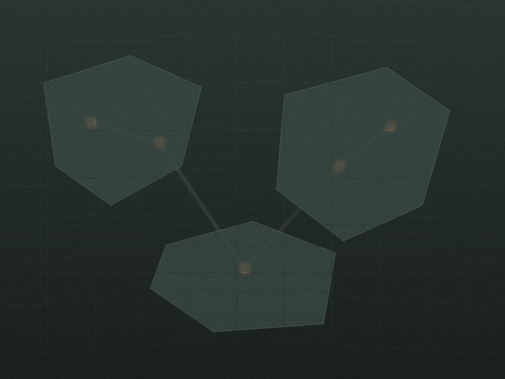

Character authorship
Attributes, classes, talents, and gear make your version of the hero distinct.

Genre Guide
A role-playing video game turns play into authorship. You guide a character or party through a world shaped by growth, equipment, dialogue, quests, and systems that keep remembering what you chose to become.
What It Is
The core of a role-playing video game is not simply fantasy, numbers, or swords. It is the feeling that your choices accumulate into an identity. A build changes what you can do. A party changes how you solve problems. A quest log turns wandering into intention.
That is why the genre keeps stretching across very different combat styles and camera angles. Some RPGs are slow and tactical. Some are fast and physical. Some are social worlds that run for years. They all keep one promise: the world cares what kind of character you are building.
Attributes, classes, talents, and gear make your version of the hero distinct.
Quests, factions, and companions create consequences that persist beyond one fight.
Combat improves because you learned systems, not only because your reflexes got faster.
Maps, lore, economies, and side paths make the setting feel lived in instead of disposable.

Core Traits
Exploration reveals opportunities. Preparation decides how you respond. Consequence is the world pushing back. This repeating loop gives RPGs their sense of pace. A quiet inventory screen matters because it prepares the next conversation, boss attempt, or branching quest outcome.
Meet a faction, reach a town, uncover a dungeon, or learn a new rule hiding inside the world.
Adjust skills, equipment, party roles, items, and dialogue tactics to suit the next challenge.
Battle, negotiate, sneak, or improvise, then carry the outcome forward into the next leg of play.

Subgenres
The labels are not walls. Many modern games blend them. They still help because each family emphasizes a different kind of pleasure: tactical planning, authored narrative, direct action, or long-form social persistence.
Party tactics, dialogue checks, systemic quests, and world reactivity sit at the front of the design.
Strong authored casts, dramatic story arcs, and a carefully paced sense of progression define the lane.
Real-time combat carries more weight, but builds, loot, and character identity still drive the experience.
Persistent online worlds turn progression into a shared ritual of raids, economies, guilds, and reputation.

Starter Path
New players do better when they match the genre to their preferred rhythm. Pick the first lane that feels natural, then let that lane teach the bigger language of role-playing systems.
Story-first entry
This lane favors authored characters, readable quest flow, and battles that support the story instead of overwhelming it. It is the easiest way to learn how builds, companions, and world stakes fit together.
FAQ
A role-playing video game is a genre where character growth, build decisions, quests, and world reactivity matter over time. The player is shaping a role, not only clearing discrete challenges.
No. Science fiction, post-apocalyptic, historical, and urban settings all support RPG design. The genre is defined more by progression and world response than by scenery.
Action-adventure games can borrow progression systems, but RPGs usually place more weight on stats, builds, dialogue, party composition, quests, and longer-term consequences.
Focus on one layer at a time: the basic combat loop, what your build emphasizes, and how quests branch. Once those feel legible, the rest of the genre opens up quickly.